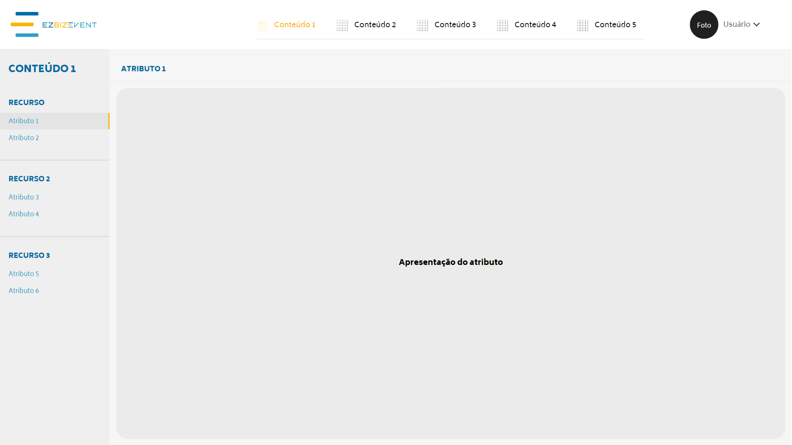
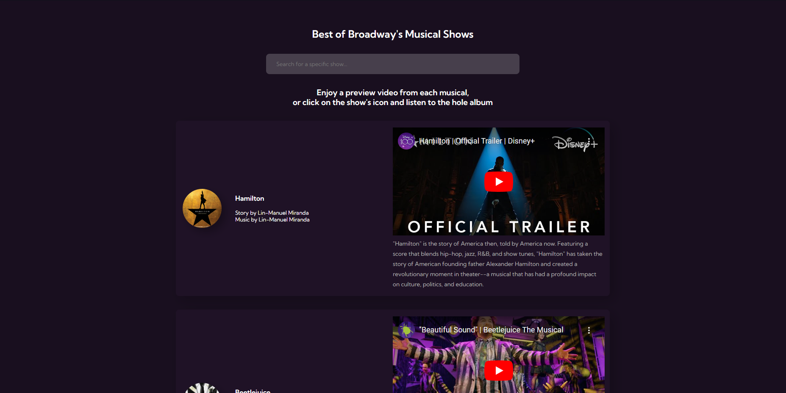

Minhas principais interfaces

Enquanto trabalhei no CIT (Centro de Inovação e Tecnologia) do Centro Universitário Senac, fiquei responsável pelos layouts da página de usuário do serviço Ezbizevent. Todos os layouts foram resultado de manipulação de imagens no Corel Draw e ordenação pelo Canva.

O que começou com uma simples atividade gratuita no Alura #7DaysOfCode para gerenciamento de sites no GitHub, permitiu que eu transformasse uma página HTML/CSS sem função em um site redirecionador de links para Spotify e player de vídeos no Youtube de alguns dos musicais mais famosos da Broadway. O site foi totalmente gerenciado no GitHub e com funções escritas pelo Chat GPT.